Chapter 3: The Stress Hypothesis
Reading: [Fung/94] Chapter 3
2026-03-19
(\(\S1.6\)) The Stress/Traction Hypothesis
Consider a material \(B\) occupying a spatial region \(V\). The body is transmitting a balanced load system shown with surface forces in red and boundary constraints in blue. A traction field arises within the body during this transmission. The word traction roughly describes the flow of load per unit area. To illuminate the traction field in a region visualize an enclosing surface \(S\) around it and imagine the interaction between the inside (\(-\)) and the outside (\(+\)) of \(S\).

The Stress/Traction Hypothesis
Let a neighborhood \(\Delta S\) on \(S\) have an outward unit normal \(\boldsymbol{\nu}\), with its direction pointing outward from the interior. Let the accumulation of load applied by the (\(+\)) side on the (\(-\)) side passing thru \(\Delta S\) be represented by \(\Delta \mathbf{F}\). The stress hypothesis can be stated: as \(\Delta S\) tends to a small but bounded size \(\alpha\), the ratio \(\Delta \mathbf{F}/\Delta S\) tends to a definite limit \(d\mathbf{F}/dS\), and the moment of the force acting on the surface \(\Delta S\) about any point within the area vanishes. This limiting vector, called as the traction or the stress vector can be written as \[ \overset{\nu}{\mathbf{T}} = \frac{d\mathbf{F}}{dS}. \]

Tractions on Cartesian Planes
At an internal point, the standard procedure is to calculate the tractions \(\overset{1}{\mathbf{T}}, \overset{2}{\mathbf{T}}, \overset{3}{\mathbf{T}}\) that arise on the planes cornered by a Cartesian triad \(\boldsymbol{e}_1, \boldsymbol{e}_2, \boldsymbol{e}_3\).

- We combine the three Cartesian tractions as the columns of the transpose of a tensor \(\boldsymbol{\tau}\) as \[ \left[ \overset{1}{\mathbf{T}}, \overset{2}{\mathbf{T}}, \overset{3}{\mathbf{T}} \right] \triangleq [\tau]^\mathsf{T} \]
The Stress Tensor
The tensor, \(\boldsymbol{\tau}\), constructed by stacking the three Cartesian internal traction vectors in rows is called as the stress tensor. The stress tensor components read \[ \begin{bmatrix} \tau_{11} & \tau_{12} & \tau_{13} \\ \tau_{21} & \tau_{22} & \tau_{23} \\ \tau_{31} & \tau_{32} & \tau_{33} \end{bmatrix} = \begin{bmatrix} \overset{1}{T_1} & \overset{1}{T_2} & \overset{1}{T_3} \\ \overset{2}{T_1} & \overset{2}{T_2} & \overset{2}{T_3} \\ \overset{3}{T_1} & \overset{3}{T_2} & \overset{3}{T_3} \end{bmatrix} \hspace{2em} \mathrm{or} \hspace{2em} \tau_{ij} = \overset{i}{T_j} \]

Properties of Internal Traction Vectors
The state of stress at a point in a material is described by internal traction vectors on a differential cube element.
Freehand depiction of traction vectors on the cube
- The differential cube has six faces, three of which have (\(+\)) normals and the other three have (\(-\)) normals.
- The three traction vectors corresponding to (\(+\)) faces are \(\overset{1}{\mathbf{T}}, \overset{2}{\mathbf{T}}, \overset{3}{\mathbf{T}}\), and the other three associated with the (\(-\)) faces are \(\overset{-1}{\mathbf{T}}, \overset{-2}{\mathbf{T}}, \overset{-3}{\mathbf{T}}\).
- The action-reaction principle of Newton can be used to relate the traction vectors on opposite cube faces as \[ \overset{i}{\mathbf{T}} = -\overset{-i}{\mathbf{T}} \hspace{2em} \mathrm{or} \hspace{2em} \overset{i}{T_j} = -\overset{-i}{T_j} \]
- It is standard convention to decompose the traction vector, \(\overset{\nu}{\mathbf{T}}\), into it’s normal part, \((\boldsymbol{\nu} \cdot \overset{\nu}{\mathbf{T}}) \boldsymbol{\nu}\), and it’s remaining part, \(\overset{\nu}{\mathbf{T}} - (\boldsymbol{\nu} \cdot \overset{\nu}{\mathbf{T}}) \boldsymbol{\nu}\), which is in-plane of the surface.
Properties of Stress Components
In parallel with the parts of the internal traction vectors, the stress components that are normal to the plane are called as normal stress while those components which are in-plane are known as shear stress. \[ \mathrm{normal} \left\{ \begin{array}{c} \tau_{11} \\ \tau_{22} \\ \tau_{33} \end{array} \right. \hspace{2em} \mathrm{shear} \left\{ \begin{array}{c} \tau_{12}, \tau_{13} \\ \tau_{21}, \tau_{23} \\ \tau_{31}, \tau_{32} \end{array} \right. \]
Freehand depiction of traction vectors on the cube
- The normal stresses are given a (\(+\)) sign if they point away from the surface (in tension) and a (\(-\)) sign if they point towards the surface (in compression).
- The shear component (e.g. \(\tau_{ij}\)) is considered as positive if it is acting in the \(+j\) direction on a plane that has a normal in \(+i\) direction, or is in the \(-j\) direction on a plane that has a normal in \(-i\) direction.
Examples
- Show the following stress components on a differential cube element \(\tau_{11} = 12\) MPa, \(\tau_{21} = -6\) MPa, \(\tau_{31} = 5\) MPa, and \(\tau_{33} = -8\) MPa, with all the remaining stress components identically equan to zero.
Write the components shown on the stress cube in matrix form.
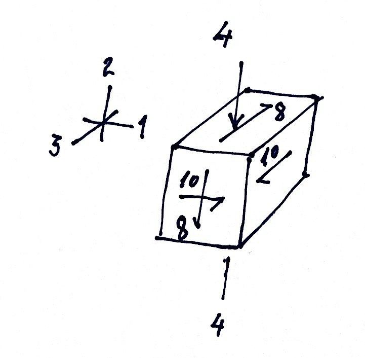
(\(\S1.11\)) Examples to Elementary Traction Fields
Slender Cylindrical (Axial) Members
A member (independent part of a structure) is said to be slender, if it has a great length to thickness ratio, i.e., \(L/T>>1\), and a constant or slightly-varying cross section swept along the normal to the cross-section plane (a.k.a. member’s longitudinal or axial direction). Such objects in geometry are known as cylinders.

Axially Loaded Cylindrical Members
Consider a member under a compressive force \(W\). We say that the beam is axially loaded without shear. Applying the stress hypothesis, we will obtain the relevant traction vector.

- Relabel coordinates (\(x\to x_1\), \(y\to x_2\), \(z\to x_3\)).
Take a section of the member using the \(x_3\) plane from the mid-span (region)
The mapping \(\boldsymbol{\nu} \to \boldsymbol{e}_3\) yields \(\overset{\nu}{\mathbf{T}} \to \overset{3}{\mathbf{T}}\)
Derivation of Nominal Normal Stress (Assumptions and Conventions)
About the traction flow, we assume that:
- there is no reason that the load would distribute non-uniformly over the cross-section!! (i.e., there is uniform distribution, \(dW/dA = W/A\), leading to \[ \overset{3}{T_3} = \tau_{33} = \sigma = \frac{W}{A}. \] Here \(\sigma\) denotes the nominal normal stress. It has units of load per area (e.g. N/cm\(^2\)).
- Under uniaxial loading, and in planes with normals parallel to the load axis, only normal traction arises (no shear tractions, i.e. \(\overset{3}{T_1} = \overset{3}{T_2} = 0\)).
- Over planes that contain the load axis (whose normal will not not have an \(\boldsymbol{e}_3\) component), zero traction previals!! That means \(\overset{1}{\mathbf{T}}=\mathbf{0}\) and \(\overset{2}{\mathbf{T}}=\mathbf{0}\), which yield the state of stress \[ [\tau] = \begin{bmatrix} 0 & 0 & 0 \\ 0 & 0 & 0 \\ 0 & 0 & \tau_{33} \end{bmatrix} \]
- The given state of stress (having all shear terms identically zero) is also known as a state of principal stress.
Example: Loading of the Femur

- Femur is the largest and most massive bone in the our body.
- Assume the load component in the axial-plane to be negligible?? (which is the same as saying the load is entirely axial and no shear component is taken)
- Using average values for a standard female, determine the normal compressive stress. (search keywords: CDC standard anthropometric measurements female data)
- Knowing the femur axis deviates from the vertical (gravity axis) on the average by some small angle (e.g. 9 degrees), what is a more realistic state of stress?
State of Stress on a Plane that is Not Normal to the Load.
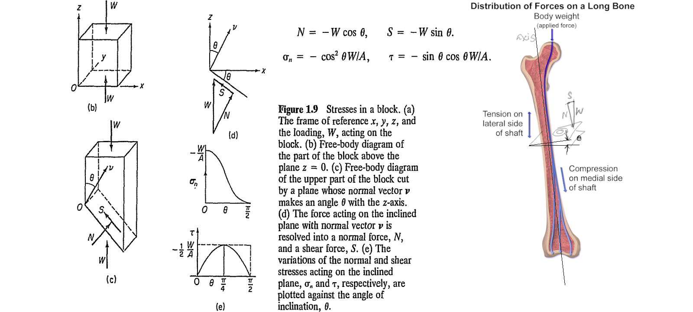
- Assume a deviation of 8 degrees between the axial load and the femoral axis, determine the shear stress to normal stress ratio observed on an axial plane.
Plates under Plane Stress
Plane State of Stress
thin flat plates or membranes stretched by in-plane load systems
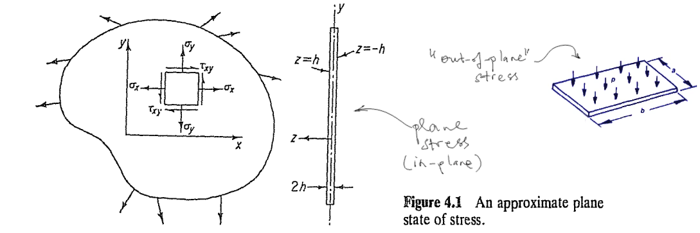
- found in ship hulls, pressurized bodies, wings, panels
- under these conditions the out-of-plane stress components vanish.
- if you choose a reference coordinate frame whose any two axes lie along the plate’s plane, then you get a reduced stress tensor, such that (continue to next section)
Reduction of the Stress Tensor to 2-D
- We may choose the plate coordinate pair to be \((1,2)\), \((2,3)\), or \((1,3)\), in which cases the corresponding stress tensors would read: \[ \tau_{ij} = [\tau] = \begin{bmatrix} \tau_{11} & \tau_{12} & 0 \\ \tau_{21} & \tau_{22} & 0 \\ 0 & 0 & 0 \end{bmatrix}, \, \{i,j=1,2\}, \quad \begin{bmatrix} 0 & 0 & 0 \\ 0 & \tau_{22} & \tau_{23} \\ 0 & \tau_{32} & \tau_{33} \end{bmatrix}, \, \{i,j=2,3\}, \quad \mathrm{or}, \; \begin{bmatrix} \tau_{11} & 0 & \tau_{13} \\ 0 & 0 & 0 \\ \tau_{31} & 0 & \tau_{33} \end{bmatrix}, \, \{i,j=1,3\} \]
- The two non-zero coordinate components can be combined in a reduced stress tensor, depicting the state of plane stress as \[ \tau_{ij} = [\tau] = \begin{bmatrix} \tau_{11} & \tau_{12} \\ \tau_{21} & \tau_{22} \end{bmatrix}, \, \{i,j=1,2\} \]
- There is no special symbol or indicator, whatsoever, that is used when the dimension of space is reduced from 3 to 2, \([\tau]\) prevails. The dimensionality is understood from the context.
The Scapula (A flat bone)
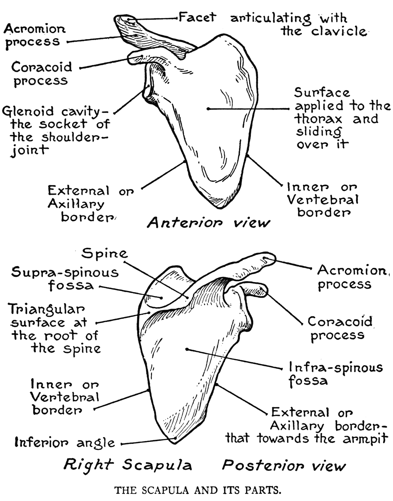
Loading and Fracture of Scapula
The state of in-plane loading of the scapula, and the most frequently observed fracture modes (according to OrthoInfo)
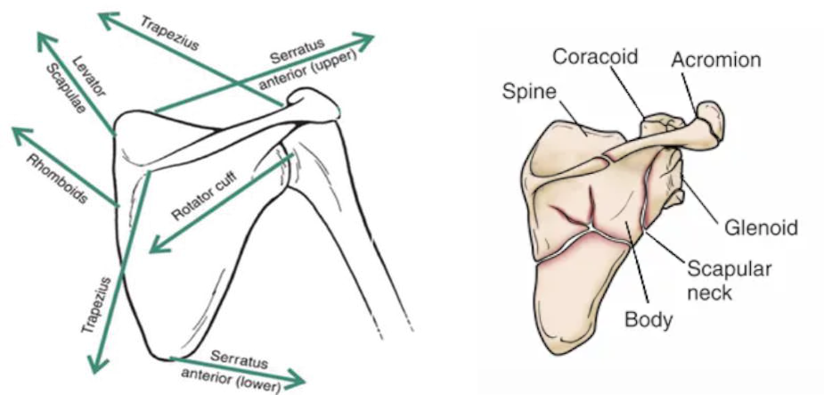
- A nominal stress calculation does not exist for this case (details about loading and boundary restraints should be provided to pose a proper boundary-value problem)
Stresses in Pressurized Vessels
Many biological examples of pressurized biological tissue may be provided.
- Lung tissue: Maintains subatmospheric interstitial pressure (−2 to −9 mmHg) due to elastic recoil, crucial for alveolar expansion and gas exchange.
- Kidney: Encapsulated organ with positive interstitial pressure (up to +10 mmHg), aiding fluid filtration and urine formation.
- Vasculatory system components, veins are pressurized biological tissues, but they operate under much lower pressure compared to arteries.
(\(\S3.2\)) Laws of Motion
- Let the space occupied by a material body \(B\) at time \(t\), be denoted it’s configuration \(B(t)\).
- Let \(\boldsymbol{r}\) denote the position vector of a material point \(X\).
- Utilize cartesian coordinates \(x_i,\,i=1,2,3\) for spatial meaurements.
- Consider a differential volume element \(dv\) around \(X\).
- Let \(\rho\) denote the mass density field and \(\boldsymbol{v}=\dot{\boldsymbol{r}}\) denote the velocity field in \(B\).
Balance of Mass
- The total mass of the material configuration \(B(t)\) can be expressed by integration.
- We can denote the mass enclosed in \(dV\) by \(\rho dV\).
- Then the total mass of \(B\) at time \(t\) becomes \[ \mathcal{M} = \int_{B(t)} \rho dV \]
- The rate of change of the total mass is shown by \[ \dot{\mathcal{M}} = \frac{D \mathcal{M}}{Dt} = \frac{D}{Dt} \int_{B(t)} \rho dV = \int_{B(t)} \frac{D}{Dt} (\rho dV) = \int_{B(t)} (\rho dV)^{\!\bullet} \] where \(\frac{D}{Dt}(\ldots)\) and \((\ldots)^{\!\bullet}\) denote the material time derivative operator, taking the derivative with respect to configurational changes of the material body \(B\) with time.
- The conservation of mass of a body is expressed by setting \[ \dot{\mathcal{M}} = 0 \]
- Notes of Importance
- the balance of mass states that the net change in mass is given by the material time rate of the mass integral, \(\dot{\mathcal{M}}\).
- the role of material time derivative to highlight the difference between \(\int_B (\cdots)^{\!\bullet}\) and \(\int_{B(t)} (\cdots)^{\!\bullet}\)
Ask GPT:
How would you describe the difference between a time derivative in the usual (partial) sense and that for a body in motion in the total sense? If possible, supply an image of a traveling (material) window versus a fixed (spatial) window highlighting the difference between tracking the motion of a group of particles versus observing the flow through a control volume.
Balance of Linear Momentum
- The total linear momentum of the material configuration \(B(t)\) can also be expressed by integration.
- We denote the linear momentum of the mass \(\rho dV\) by multiplying it with its velocity as \(\boldsymbol{v} \rho dV\).
- Then the total linear momentum of \(B\) at time \(t\) becomes \[ \mathcal{P} = \int_{B(t)} \boldsymbol{v} \rho dV \]
- Euler interpreted Newton’s equation of motion of a particle for a body by stating that the rate of change of linear momentum is equal to the resultant of all external mechanical effects (loads) as \[ \dot{\mathcal{P}} = \mathcal{F} \] where \(\dot{\mathcal{P}}\) denotes the material time derivative of the linear momentum and \(\mathcal{F}\) denotes the net external force on \(B\).
Classification of External Loads
- In the mechanics of continuous media, there are two types of external forces acting on material bodies.
- Body forces, acting on volume elements (forces per unit volume).
- \(\boldsymbol{X}\) or \(\boldsymbol{b}\)
- gravitational loads (\(\rho \boldsymbol{g}\) has units of force per volume) \[ \int_{B(t)} \boldsymbol{b} dV = \int_{B(t)} \boldsymbol{g} \rho dV\]
- electromagnetic loads
- Surface forces, or surface tractions, acting on surface elements (forces per unit area).
- surface traction due to mechanical contact \[ \overset{\nu}{\boldsymbol{T}} \quad \mathbf{or} \quad \overset{\nu}{\boldsymbol{t}} \quad \to \quad \int_{\partial B(t)} \overset{\nu}{\boldsymbol{t}} dA \]
- aerodynamic pressure (units of force per area), \(-p\boldsymbol{n}\) where \(\boldsymbol{n}\) is the unit outward normal at the surface of \(B\).
- drag force in viscous flows
- Body forces, acting on volume elements (forces per unit volume).
Balance of Linear Momentum (with forces)
Replacing the general expression of the resultant of external forces, \(\mathcal{F}\) with the above force type definitions, we arrive at the terminal integral expression \[ \int_{\partial B(t)} \overset{\nu}{\boldsymbol{t}} dA + \int_{B(t)} \boldsymbol{b} dV = \int_{B(t)} (\boldsymbol{v} \rho dV)^{\!\bullet} \]
Balance of Moment of Momentum
- The integral of the moment of momentum of the differential mass element about the origin \(O\), \(\boldsymbol{r} \times \boldsymbol{v} \rho dV\), over the domain \(B(t)\), i.e., \[ \mathcal{H}^O = \int_{B(t)} \boldsymbol{r} \times \boldsymbol{v} \rho dV \] is the moment of momentum of the configuration at \(B(t)\).
- According to Euler, the law of motion for a continuum asserts that the rate of change of the moment of momentum is equal to the net applied torque \(\boldsymbol{r} \times \mathcal{F}\) about the origin, i.e., \[ \dot{\mathcal{H}}^O = \boldsymbol{r} \times \mathcal{F} \]
- Replacing \(\mathcal{F}\) with the force definitions, we the second vector equation of motion \[ \int_{\partial B(t)} \boldsymbol{r} \times \overset{\nu}{\boldsymbol{t}} dA + \int_{B(t)} \boldsymbol{r} \times \boldsymbol{b} dV = \int_{B(t)} (\boldsymbol{r} \times \boldsymbol{v} \rho dV)^{\!\bullet} \]
(\(\S3.3\)) Cauchy’s Formula
Relates the components of the traction that resides over a plane with a normal \(\nu\), with the unit normal and the stress tensor components. \[ \overset{\nu}{t_j} = \nu_i \tau_{ij} \] Note that similar relations between the traction vector components on cartesian planes, the base vector and stress tensor components exists:
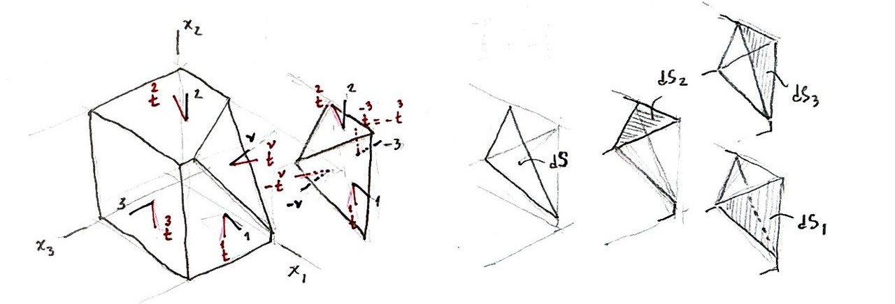
- The internal surface traction at a point \(P\) over a plane with a normal \(\nu\) was defined by \(\overset{\nu}{\boldsymbol{T}}\) or \(\overset{\nu}{\boldsymbol{t}}\). The traction over the opposite plane (with a normal \(-\nu\)) is equal in magnitude but opposite in direction, i.e. \(\overset{-\nu}{\boldsymbol{t}} = -\overset{\nu}{\boldsymbol{t}}\).
- This is also true for the tractions that lie over cartesian planes, e.g. \(\overset{-1}{\boldsymbol{t}} = -\overset{1}{\boldsymbol{t}}\), etc.
- From geometry, we define the area formed by the intersection of an oblique plane with normal \(\nu\), and the three other cartesian planes, as \(dS\).
- The projection of \(dS\) onto the cartesian plane \(i\) (perpendicular to \(x_i\)) is given by \(dS_i = \nu_i dS\).
Motion Law Applied to a Tetrahedron Cut
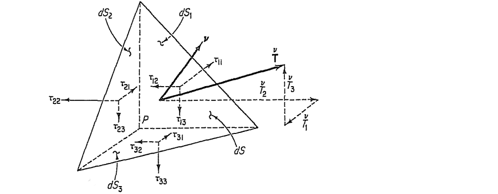
- For the tetrahedron cut with four surfaces (\(dS_i, dS\)) and volume \(dV={{1}\over{3}}h dS\):
- Surface forces: \(-\overset{1}{\boldsymbol{t}} dS_1\), \(-\overset{2}{\boldsymbol{t}} dS_2\), \(-\overset{3}{\boldsymbol{t}} dS_3\) on cartesian planes and \(\overset{\nu}{\boldsymbol{t}} dS\) on the oblique plane
- Body force: \(\boldsymbol{b} {{1}\over{3}}h dS\).
- Inertial term: \(\dot{\boldsymbol{v}} {{1}\over{3}}h dS\).
- The balance of linear momentum for the tetrahedron cut reads: \[ -\overset{1}{\boldsymbol{t}} dS_1 - \overset{2}{\boldsymbol{t}} dS_2 - \overset{3}{\boldsymbol{t}} dS_3 + \overset{\nu}{\boldsymbol{t}} dS + \boldsymbol{b} {{h}\over{3}} dS = \dot{\boldsymbol{v}} {{h}\over{3}} dS \]
- Replacing \(dS_i = \nu_i dS\), dividing by \(dS\), and taking the limit as \(h \to 0\), we obtain \[ \overset{\nu}{\boldsymbol{t}} = \nu_1 \overset{1}{\boldsymbol{t}} + \nu_2 \overset{2}{\boldsymbol{t}} + \nu_3 \overset{3}{\boldsymbol{t}} \]
- Arranging the components \(\nu_i\) in a vector form and the vectors \(\overset{i}{\boldsymbol{t}}\) in a matrix form yields \[ \overset{\nu}{\boldsymbol{t}} = \{\nu_1\; \nu_2\; \nu_3 \} \begin{bmatrix} -\; \overset{1}{\boldsymbol{t}} \to \\ -\; \overset{2}{\boldsymbol{t}} \to \\ -\; \overset{3}{\boldsymbol{t}} \to \end{bmatrix} \]
- and noting that the matrix components \(\overset{i}{t}_j\) corresponds identically with the stress tensor components \(\tau_{ij}\), we get the Cauchy’s Formula \(\overset{\nu}{t}_j = \nu_i \tau_{ij}\).
Sample Problem 1: (use plane formula)
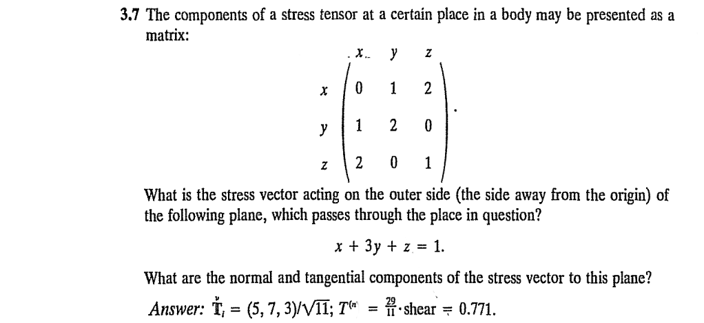
Sample Problem 2
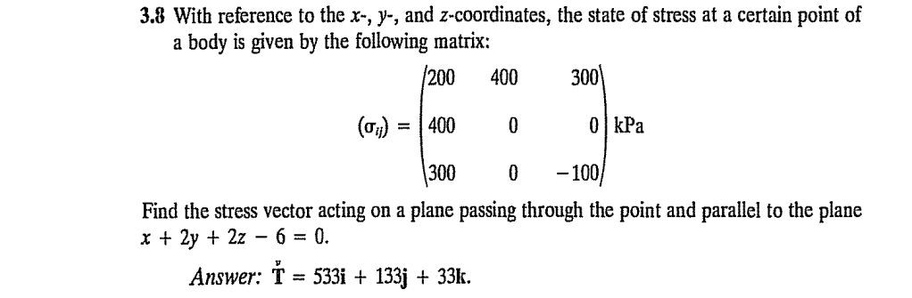
(\(\S3.5\)) Transformation of Stress Components
Remember how coordinates of a point, \(x_j\), could be transformed from the basis \(\boldsymbol{e}_j\) into another bases \(\boldsymbol{e}_{i'}\)?
- We used the rotation tensor definition \(\beta_{i'j} = \boldsymbol{e}_{i'} \cdot \boldsymbol{e}_j\) for this purpose, and wrote the transformed coordinates as \[ x_{i'} = \beta_{i'j} x_j \]
- Can this approach be used to transform the stress tensor components, \(\tau_{ij} \to \tau_{i'j'}\)?
The Rotation Tensor Transforms a Second-Order Tensor
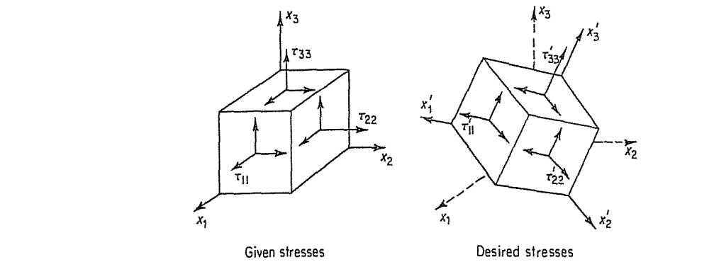
- Stress is a second-order tensor with two indices \(\tau_{ij}\) where the components are expressed with respect to a particular coordinate frame using a set of basis vectors, \(\boldsymbol{e}_i\).
- Consider an alternative coordinate frame using it’s own set of basis vectors, \(\boldsymbol{e}_{j'}\).
- How are the stress components in the two frames, \(\tau_{ij}\) and \(\tau_{i'j'}\) related?
- As it turns out each one of the indices of a higher-order tensor can be and should be transformed by a coordinate transformation operation
- Thus, for a second-order tensor such as stress, two transformations are in order, as \[ \tau_{i'j'} = \beta_{i'i} \beta_{j'j} \tau_{ij}. \]
- Noting the order in which inner product takes place, the matrix form reveals \[ [\tau'] = [\beta] [\tau] [\beta]^T \] where a normal matrix multiplication occurs in a row-column operation which a transposed multiplication occurs in a column-column operation.
Educational Application Hub:
Tools for transforming components of the second-order stress tensor
Sample Problem 1
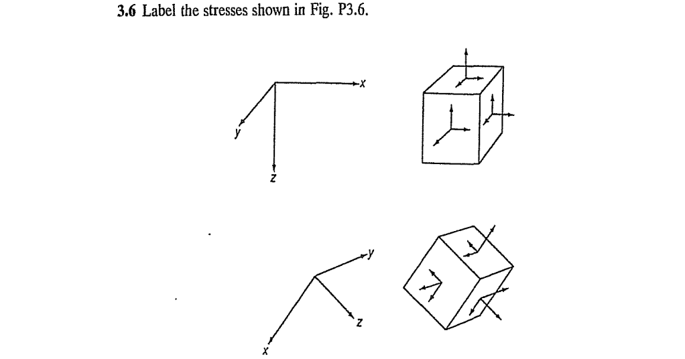
Sample Problem 2
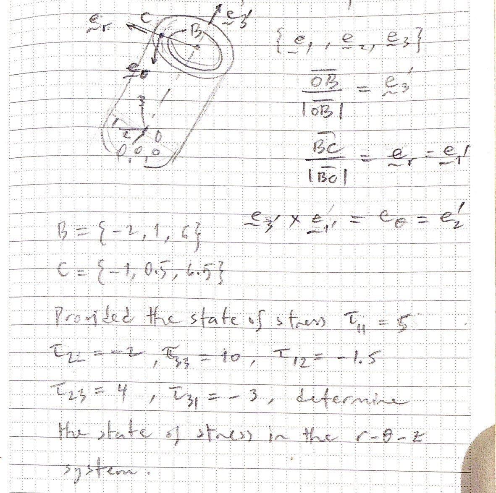